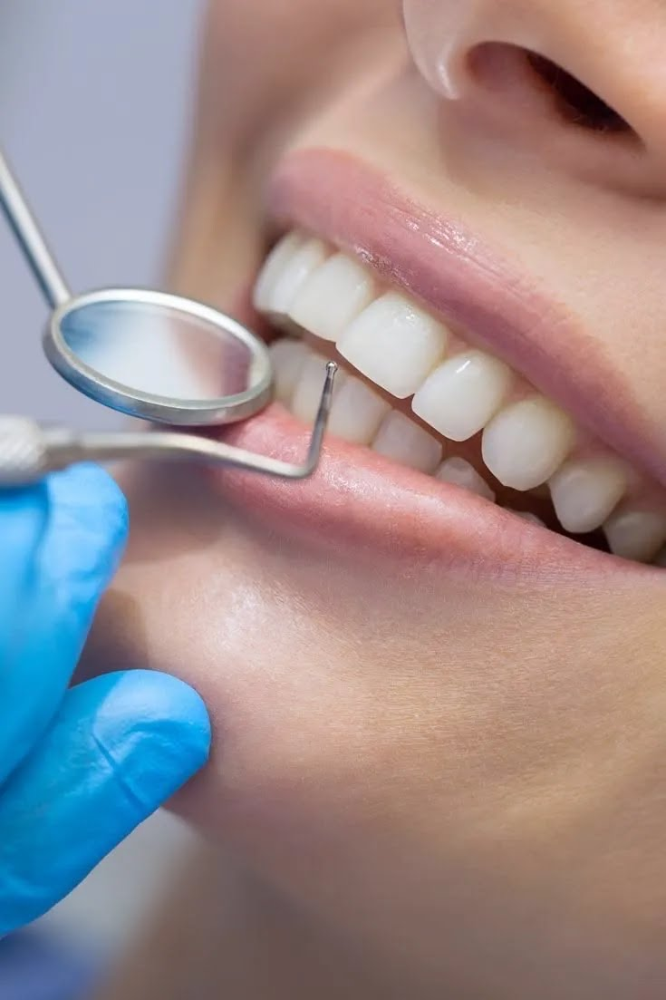
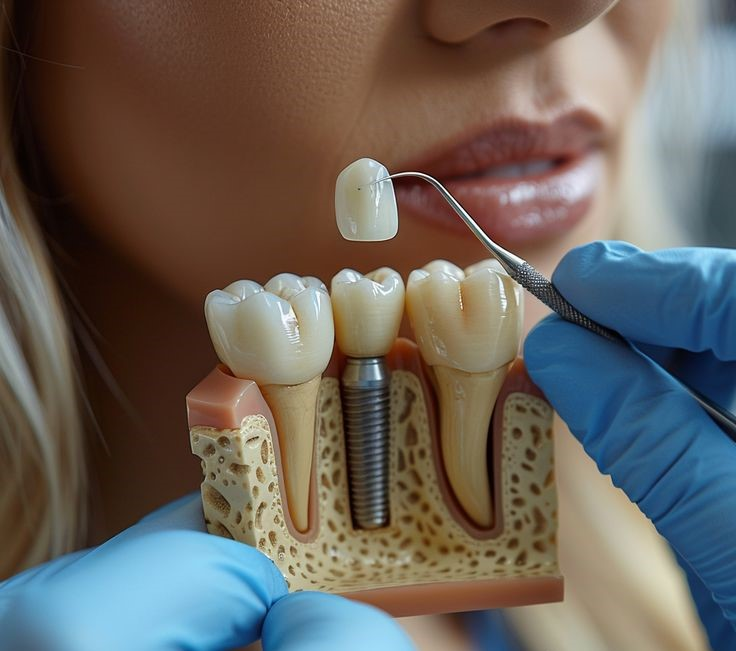
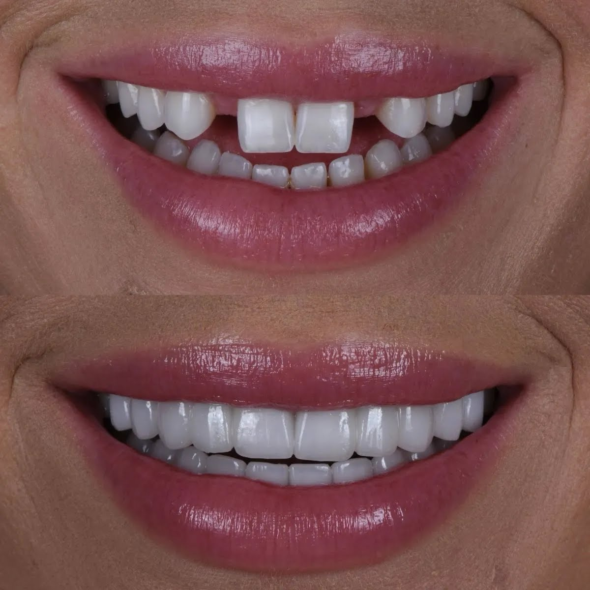
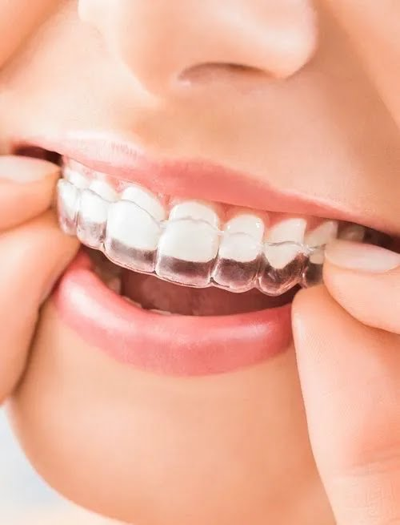

Conheça nosso trabalho

Profilaxia e Descontaminação Oral (Limpeza Preventiva)
Higienização profunda de alta precisão com raspagem ultrassônica e jato de bicarbonato, focada na remoção de tártaro e placa bacteriana para a manutenção rigorosa da saúde gengival e longevidade dos procedimentos estéticos.
Clareamento
Protocolo avançado de clareamento a laser e fototerapia, projetado para remover pigmentações profundas do esmalte de forma rápida e segura, devolvendo um tom radiante e natural sem comprometer a estrutura dental.
Implantodontia de Alta Precisão
Planejamento digital avançado e guiado por computador para a substituição definitiva de dentes perdidos, garantindo máxima precisão cirúrgica, estética natural e rápida recuperação.
Cirurgia Maxilofacial Complexa
Procedimentos cirúrgicos de alta complexidade focados na correção funcional e estrutural da face e dos maxilares, executados com tecnologia de ponta e rigor biomecânico.
Reabilitação Oral Estética
Transformação personalizada do sorriso através de lâminas ultra-finas de porcelana pura. Correção perfeita de formato, cor e alinhamento com máxima preservação da estrutura dental.
Ortodontia de Alta Tecnologia
Alinhamento dentário e correção oclusal através de aparelhos autoligados de alta performance e alinhadores invisíveis, focados em previsibilidade, rapidez e conforto para o paciente..| Serviço | Preço Médio |
|---|---|
| Implantodontia de Alta Precisão | R$ 1500 |
| Cirurgia Maxilofacial Complexa | R$15.000 |
| Reabilitação Oral Estética | R$20.000 |
| Ortodontia de Alta Tecnologia | Varia |
| Clareamento Dental de Alta Performance | R$ 150 a R$ 350 |
| Profilaxia e Descontaminação Oral | R$22.000 |